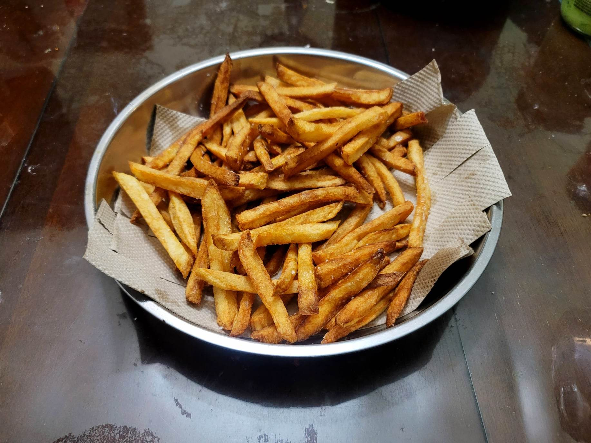

French Fries

Ingredients:
- Russet potatoes, peeled, cut into sticks
- Oil, for frying
- Salt, to taste
Instructions:
- Place the cut potatoes into a large bowl of water. Let sit for 2-3 hours or overnight.
- Heat a pot of oil to 300 degrees Fahrenheit. Remove the potatoes from the water and pat completely dry.
- In batches, place the potatoes in the hot oil. Fry for about 4-5 minutes per batch, and then transfer to a paper towel lined tray. They should not start to brown yet at this point.
- Raise the heat to 400 degrees Fahrenheit. Fry again for about 3-4 minutes per batch or until golden brown, and then transfer to a paper towel lined tray. Toss with salt immediately before it starts to cool down. Serve hot.